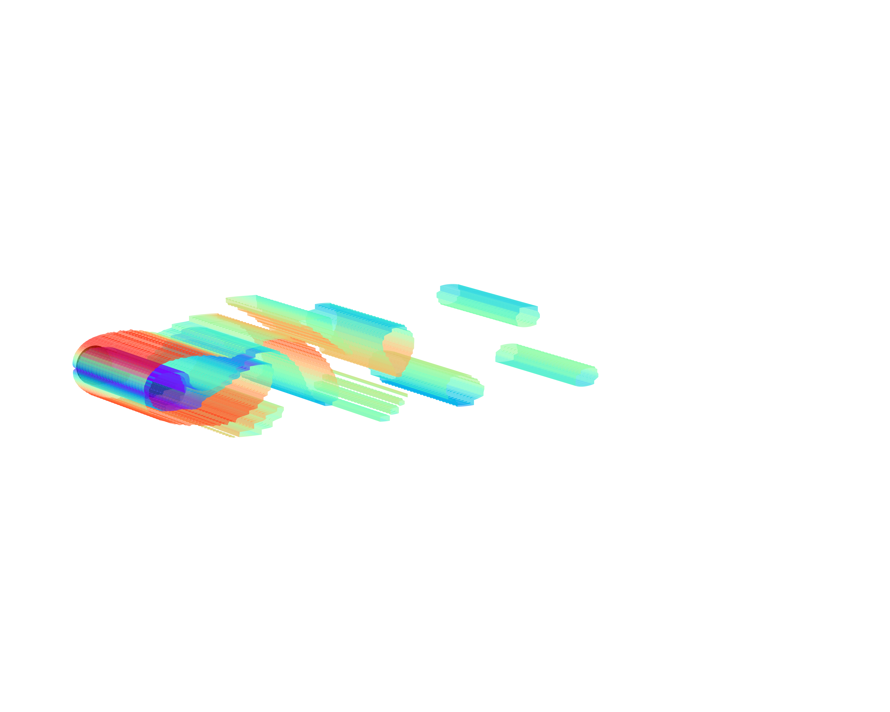
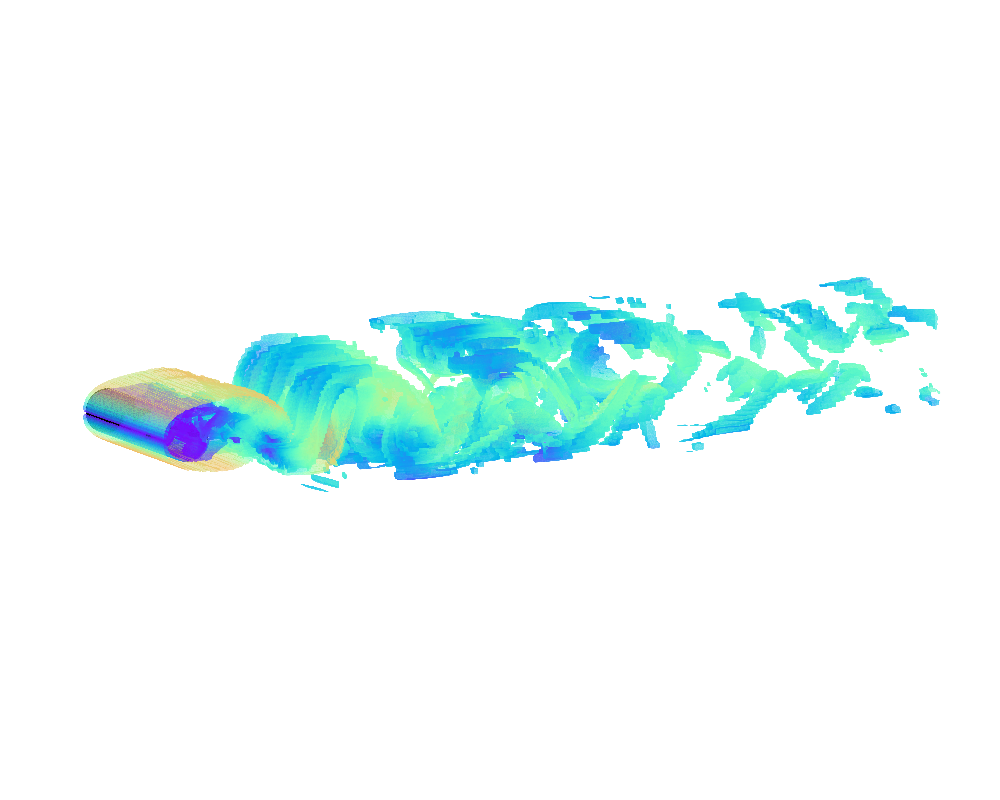
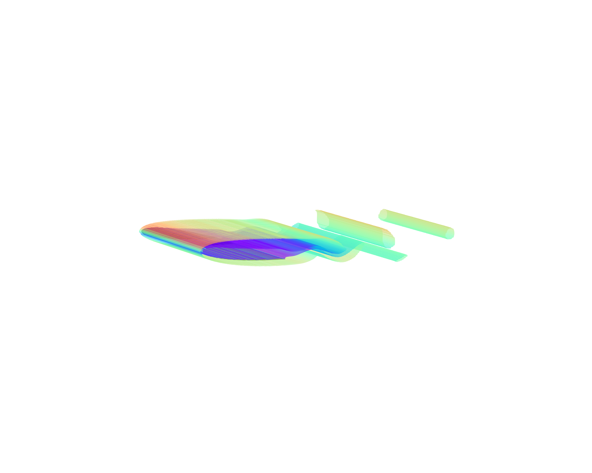
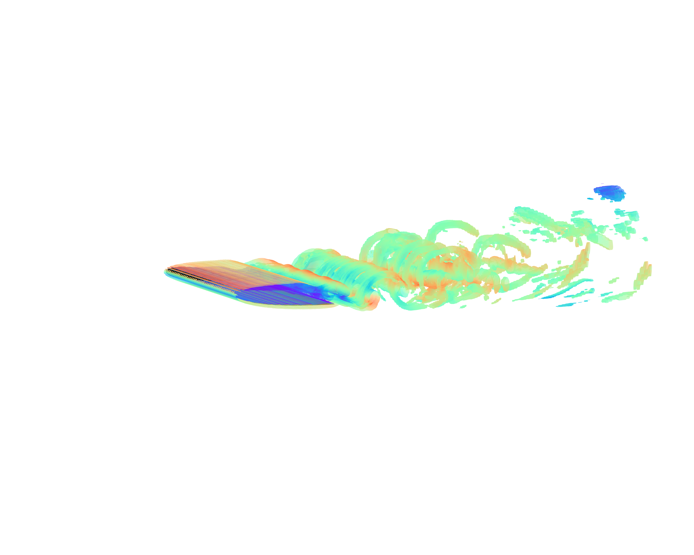
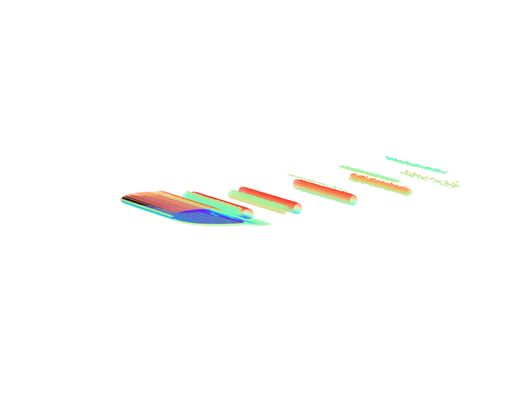
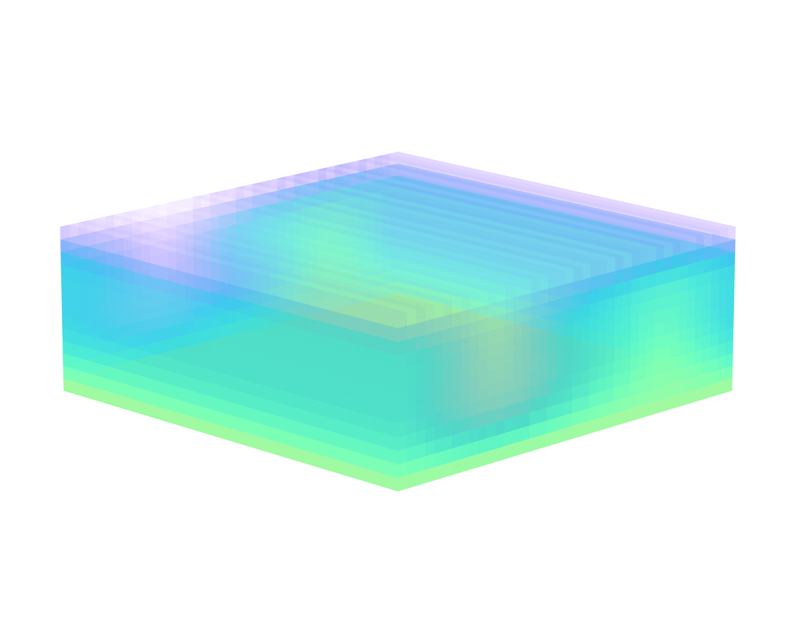
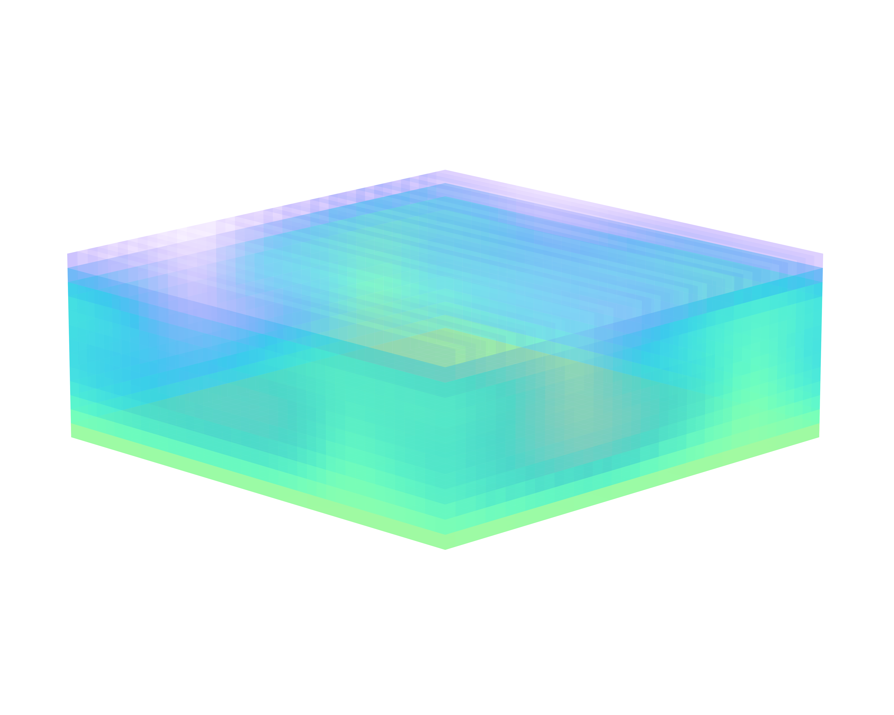
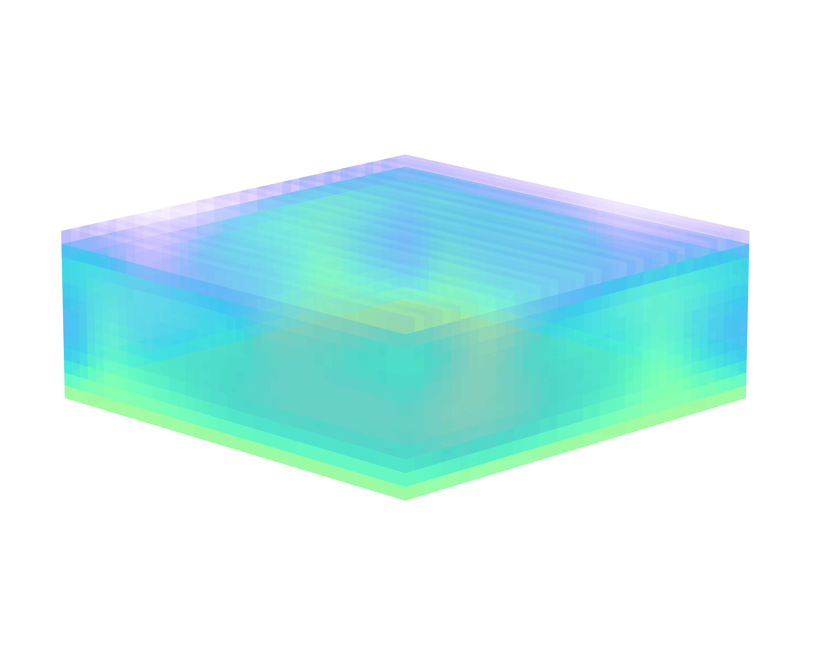

Environments
FluidGym provides 35+ environments across four fluid physics domains, each available in easy, medium, and hard difficulty levels.
Flow Past Cylinder
Active flow control around a cylinder via jet or rotational actuation. The goal is to suppress vortex shedding and reduce drag.
Easy (Re = 100) |
Medium (Re = 250) |
Hard (Re = 500) |
|---|---|---|
 |
 |

|
{kind=link}
{kind=link}
See Flow Past Cylinder for the full environment list and API reference.
Flow Past Airfoil
Flow past a NACA 0012 airfoil with the goal of improving aerodynamic efficiency by maximizing the lift-to-drag ratio.
Easy (Re = 1×10³) |
Medium (Re = 3×10³) |
Hard (Re = 5×10³) |
|---|---|---|
 |
 |
 |
{kind=link}
{kind=link}
{kind=link}
See Flow Past Airfoil for the full environment list and API reference.
Rayleigh-Bénard Convection (RBC)
Thermal convection driven by buoyancy between a heated bottom plate and a cooled top plate. Heaters along the bottom wall are controlled to enhance heat transfer.
Easy (Ra = 8×10⁴) |
Medium (Ra = 4×10⁵) |
Hard (Ra = 8×10⁵) |
|---|---|---|
 |
 |
 |
{kind=link}
{kind=link}
{kind=link}
See Rayleigh-Bénard Convection (RBC) for the full environment list and API reference.
Turbulent Channel Flow (TCF)
3D wall-bounded turbulent channel flow with blowing/suction actuation on the bottom or both walls to reduce skin-friction drag.
Easy (Re = 180) |
Medium (Re = 330) |
Hard (Re = 550) |
|---|---|---|

|

|

|
See Turbulent Channel Flow (TCF) for the full environment list and API reference.